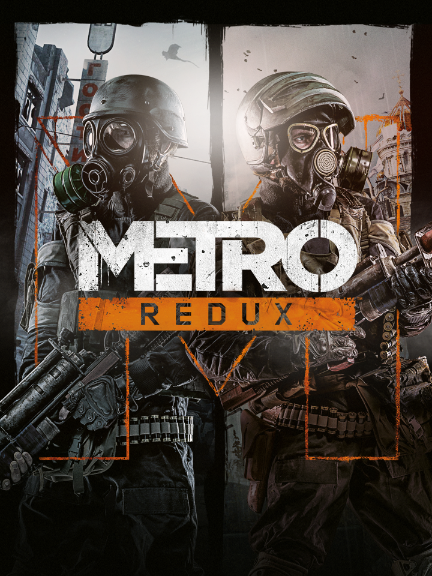

Metro 2033 Redux
Metro 2033 Redux
Detalhes
 |
|
| Tempo de jogo | Não Jogado |
| Última Atividade | Nunca |
| Adicionado | 07/06/2026 0:35:52 |
| Modificado | 07/06/2026 0:48:29 |
| Status de Conclusão | Not Played |
| Biblioteca | Steam |
| Fonte | Steam Family Sharing |
| Plataforma | PC (Windows) |
| Data de Lançamento | 25/08/2014 |
| Pontuação da Comunidade | 83 |
| Avaliação da crítica | 83 |
| Pontuação do Usuário | |
| Gênero | Role-playing (RPG) Shooter |
| Desenvolvedor | 4A Games |
| Editor | Deep Silver Koch Media |
| Funções | Single Player |
| Links | Wikipedia Community Wiki YouTube Official Website Steam GOG Xbox Playstation Nintendo |
| Tag | |
Descrição
In 2013 the world was devastated by an apocalyptic event, annihilating almost all mankind and turning the Earth's surface into a poisonous wasteland. A handful of survivors took refuge in the depths of the Moscow underground, and human civilization entered a new Dark Age.
The year is 2033. An entire generation has been born and raised underground, and their besieged Metro Station-Cities struggle for survival, with each other, and the mutant horrors that await outside. You are Artyom, born in the last days before the fire, but raised underground. Having never ventured beyond the city limits, one fateful event sparks a desperate mission to the heart of the Metro system, to warn the remnants of mankind of a terrible impending threat.
Your journey takes you from the forgotten catacombs beneath the subway to the desolate wastelands above, where your actions will determine the fate of mankind. But what if the real threat comes from within?
Metro 2033 Redux is the definitive version of the cult classic ‘Metro 2033’, rebuilt in the latest and greatest iteration of the 4A Engine for Next Gen. Fans of the original game will find the unique world of Metro transformed with incredible lighting, physics and dynamic weather effects. Newcomers will get the chance to experience one of the finest story-driven shooters of all time; an epic adventure combining gripping survival horror, exploration and tactical combat and stealth.
All the gameplay improvements and features from the acclaimed sequel ‘Metro: Last Light’ have been transferred to Metro 2033 Redux – superior AI, controls, animation, weapon handling and many more – to create a thrilling experience for newcomers and veterans alike. With two unique play-styles, and the legendary Ranger Mode included, Metro 2033 Redux offers hours of AAA gameplay for an incredible price.
The year is 2033. An entire generation has been born and raised underground, and their besieged Metro Station-Cities struggle for survival, with each other, and the mutant horrors that await outside. You are Artyom, born in the last days before the fire, but raised underground. Having never ventured beyond the city limits, one fateful event sparks a desperate mission to the heart of the Metro system, to warn the remnants of mankind of a terrible impending threat.
Your journey takes you from the forgotten catacombs beneath the subway to the desolate wastelands above, where your actions will determine the fate of mankind. But what if the real threat comes from within?
Product Overview
Metro 2033 Redux is the definitive version of the cult classic ‘Metro 2033’, rebuilt in the latest and greatest iteration of the 4A Engine for Next Gen. Fans of the original game will find the unique world of Metro transformed with incredible lighting, physics and dynamic weather effects. Newcomers will get the chance to experience one of the finest story-driven shooters of all time; an epic adventure combining gripping survival horror, exploration and tactical combat and stealth.
All the gameplay improvements and features from the acclaimed sequel ‘Metro: Last Light’ have been transferred to Metro 2033 Redux – superior AI, controls, animation, weapon handling and many more – to create a thrilling experience for newcomers and veterans alike. With two unique play-styles, and the legendary Ranger Mode included, Metro 2033 Redux offers hours of AAA gameplay for an incredible price.
Game Features
- Immerse yourself in the Moscow Metro - witness one of the most atmospheric worlds in gaming brought to life with stunning next-gen visuals at 60FPSBrave the horrors of the Russian apocalypse - equip your gasmask and an arsenal of hand-made weaponry as you face the threat of deadly mutants, human foes, and the terrifying environment itself
- Rebuilt and Remastered for next-gen - this is no mere "HD port." Metro 2033 has been rebuilt in the vastly improved Last Light engine and gameplay framework, to create the definitive version of the cult classic that fans and newcomers alike can enjoy
- Two unique Play Styles : "Spartan" and "Survival" - approach the game as a slow-burn Survival Horror, or tackle it with the combat skills of a Spartan Ranger in these two unique modes
- The legendary Ranger Mode returns - dare you play the fearsome Ranger Mode? No HUD, UI, deadlier combat and limited resources combine to create the ultimate immersive experience
Notice for OS X Yosemite 10.10.5 users with an Nvidia graphics card at or above the minimum specification listed below:
Currently separate drivers are available to fix performance issues specifically affecting Nvidia users who are using OS X Yosemite. These drivers are currently only compatible with OS X Yosemite 10.10.5 and can be found here .
Based on the internationally bestselling novel series by Dmitry Glukhovsky